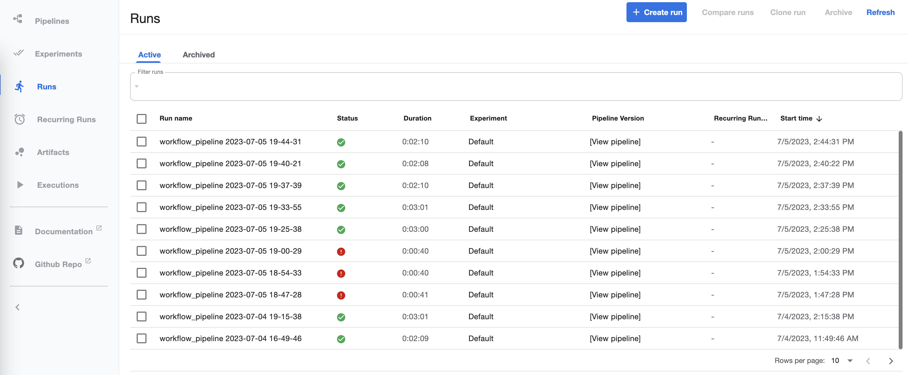
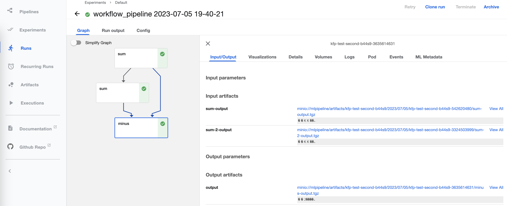

Kubeflow Pipelines Workflow
The KFP Workflow is a backend for configuring a
FunctionFuse workflow graph as a Kubeflow Pipeline. In this implementation
the code and requirements for the FunctionFuse graph are packaged in a
container. The container is used within Kubernetes when the KFPWorkflow is
.run(). The DAG gets created within KFP with identical container and code
for each Node, but on graph traversal the specific Node’s execution functions
are referened by an environment variable matching the Node name. The intention
is to prevent complex code being written into yaml files. Instead identical
simpler code is written to the yaml file for each KFP component, and then the
main code is packaged inside the container. When a component is run, an
environment variable is used to indicate the precise function to call.
See the Kubeflow Pipelines documentation for more details on how to use KFP in general.
After declaring a frontend-defined workflow, e.g.:
from functionfuse import workflow
@workflow
def sum(a, b):
return a + b
a, b = 1, 1
a_plus_b = sum(a, b).set_name("node1")
a_plus_two_b = sum(a_plus_b, b).set_name("node2")
a KFPWorkflow can be instantiated, and the run() function will go
through a series of steps to convert the FunctionFuse DAG to a compatible
format for KFP, and immediately initiate a KFP Run.
from functionfuse.backends.addons.kfpback import KFPWorkflow
kfp_workflow = KFPWorkflow(a_plus_two_b, workflow_name="sums")
kfp_workflow.run()
Run Sequence
KFPWorkflow.run() triggers a sequence of operations:
Build a container by copying the folder that python was executed in to a folder
/ffrun/on the baseimagePush that container to a specified docker registry (see below for setting registry options)
A KFP component preparation stage then traverses the graph and for each Node:
gathers
typeof all inputsfor inputs that are Node results, replace the type with the KFP
InputBinaryFile(bytes)a new function is created (see the Note below on what that function does), and the signature of that function is then assigned to ensure that arguments are named with types provided
a KFP component is created using
create_component_from_func()– note that this means that types for the KFPcomponent_specactually are defined by the inputs passed to a Node at runtimeA
@kfp.dsl.pipeline()is created by traversing the graph again, this time calling each Node’s KFP component. An environment variable calledFFFUNCTIONis set in the container for each component to indicate which Node is being run.Connect to the KFP Client and call
client.create_run_from_pipeline_func()with the create pipeline function to start a run
The generated function
During KFP component creation, a new function called exec_func is
created for each Node, and the KFP component is created from the new
exec_func. Each KFP component is run standalone in a container, so to
get access to global information, and to run arbitrary functions with any
signatures (to maintain the simplicity of the FunctionFuse frontend), we
call the entire code again from scratch within exec_func. An environment
variable FFFUNCTION is used to divert the processing to run function of
a Node with name matching the contents of FFFUNCTION. The general flow
of exec_func is as follows:
Load data from
InputBinaryFilesources, and extract indexed results to pass as the arguments to theNode.func.Arguments are then set as attributes of the
osmodule in theos.ffargsandos.ffkargsvariables.Call
importon the original file that was used to set up the workflow. This, of course, callsKFPWorkflow.run()again, but this time the presence of theFFFUNCTIONenvironment variable diverts to code flow before creating the KFP components, and instead traverses the graph to find the Node whose name matchesFFFUNCION.The arguments are retrieved by importing
osand theNode.funcis called. Returned values are assinged toos.ffresult.Back in
exec_func, os.ffresult is pickled to anOutputBinaryFile. This can then be retrieved by subsequent KFP components.
Warning
Due to the use of import on the original file that starts the workflow,
the workflow run must be triggered in that file without the use of a
if __name__ == "__main__" statement.
All code that is not installed on the container (or specified for KFP to
install using packages_to_install) must be in the folder that the
original python script is executed from.
Kubernetes interactions
Before calling kfp_workflow.run(), additional settings may be required.
The created container will be pushed to a container registry that the KFP Host Kuberenetes cluster has access to. If this is a private registry, information for a docker login command should be provided:
# baseimage defaults to python. This image contains requirements, but is in a private registry:
baseimage = "docker-na.artifactory.swg-devops.com/res-hcls-mcm-brain-docker-local/particles-py3.10:1.5"
# Provide credential used by docker login:
registry_credentials = {"server": "docker-na.artifactory.swg-devops.com/res-hcls-mcm-brain-docker-local",
"username": "user@us.ibm.com",
"password": "xxxxx"}
kfp_workflow.set_baseimage(baseimage)
kfp_workflow.set_registry_credentials(registry_credentials)
kfp_workflow.run()
The Kubernetes cluster should also have access to this registry via an
ImagePullSecret in the kubeflow namespace. This can be created using
kubectl (this should probably use a service account rather than a user’s
personal login to the registry):
kubectl create secret -n kubeflow docker-registry regcred \
--docker-server=docker-na.artifactory.swg-devops.com/res-hcls-mcm-brain-docker-local \
--docker-username=user@us.ibm.com \
--docker-password=xxxxx
The default address for the KFP host is "http://localhost:3000". To use a different
address set:
kfp_host = "http://<address>:<port>"
kfp_workflow.set_kfp_host(kfp_host)
kfp_workflow.run()
KFP Dashboard
Workflow runs logged in the KFP system:
An individual Run shows information about the components run, locations of inputs and outputs, logs, and results:
